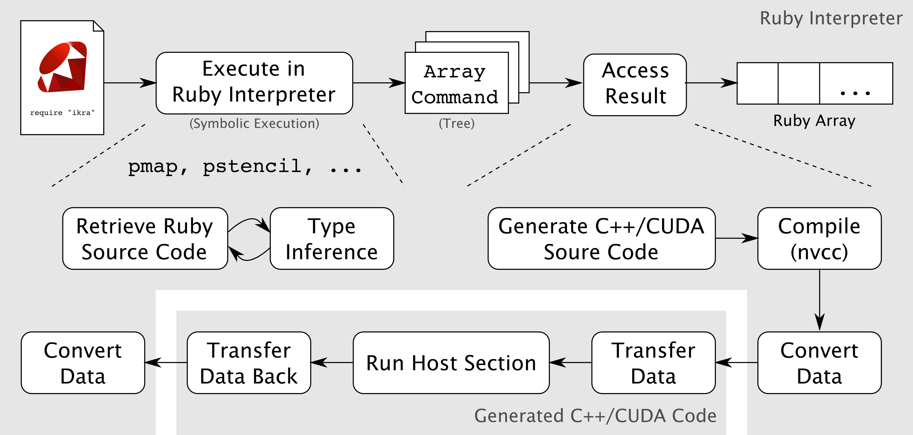

Ikra is an implementation of Ruby for GPGPU and other massively parallel processors. In Ikra, the programmers can write parallel programs by exploiting higher-order operations over an array compatible class in Ruby. The Ikra preprocessor then compiles those operations into backend languages (e.g., CUDA), and executes them on parallel processors such as GPUs. Our research focus is to provide a quick prototyping platform for highly-parallel programs and for experimenting various application and hardware-specific optimization techniques.
Ikra is a Ruby extension (Gem) for array-based general purpose GPU computing. It provides parallel versions of commonly-used collection API methods, of which many are customizable with code. Its goal is to make GPU programming easier and more productive.
Ikra supports object-oriented programming and simple dynamic programming (no metaprogramming) inside parallel sections. It applies a number of performance optimizations to reach performance that is close to hand-written CUDA code.

Ikra is a Russian word that means roe of the salmon, which is also known as “rubies of the sea” in Japan. (Picture is by baron valium, CC BY-SA 2.0)